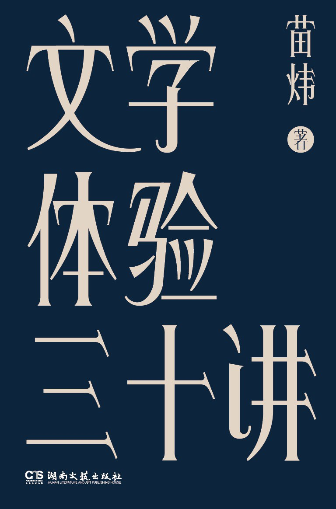

《文学体验三十讲》

总体观点
文学不是语文课本里的道德说教或应试标准答案，而是人类情感的极限制图与幽微避难所；它不负责提供现成的生活药方，而是通过虚构的复杂性守护个体内心的真实感觉。
伟大的小说家通过具体可感的细节、记忆的折射与荒诞的境遇，打破世俗社会的单向度价值规训，让读者在面对衰老、疾病、平庸与死亡时拥有免于精神崩溃的审美缓冲垫。
阅读本质上是一场对抗遗忘与麻木的私人修炼：在信息碎片化与功利算法席卷的今天，沉浸于长篇文学的慢阅读，是现代人独自守护精神主体性与共情能力的最后领地。
核心观点
-
1. 文学不是提取中心思想的教条，而是感知复杂人性的情感显微镜
文学的价值从来不在于提供非黑即白的道德裁判，而在于展示人在特定困境中的纠结、软弱、虚荣与真实心跳，拓宽读者对同类的理解边界。
读《包法利夫人》不是为了批判爱玛的虚荣与不道德，而是看清浪漫主义幻想与残酷平庸现实迎面相撞时，普通人灵魂被碾碎的真实悲剧。 -
2. 记忆是自我建构的砖石，文学通过回溯重写个体的生命史
我们现在的样子是由我们选择记住什么、如何解释过去决定的；文学为我们示范了如何打捞残存的记忆碎片，构筑对抗虚无的精神避风港。
纳博科夫在《说吧，记忆》中用如丝绸般华丽精准的文字，将流亡异乡的失落转化为对童年庄园光影、蝴蝶与亲情的永恒艺术定格。 -
3. 荒岛与孤独是现代人的永恒宿命，文学教会我们在孤绝中自给自足
每个人本质上都是一座孤岛；荒岛叙事不仅是物理上的探险求生，更是现代人面对内心无尽孤独时，如何依靠有限工具重塑理性与秩序的隐喻。
鲁滨逊在荒无人烟的孤岛上记日记、造陶器、驯养山羊，并非单纯展示殖民扩张精力，而是在绝对荒凉中重新发明文明生活与内心尊严。 -
4. 面对衰老与死亡的无情碾压，虚构叙事提供了人类仅存的审美抵御
世俗社会习惯将衰老与死亡遮蔽在医院幕布之后，文学却直面肉体溃败的血淋淋现实，逼迫读者在终点倒逼当下的生命意义。
托尔斯泰在《伊凡·吉里奇之死》中层层剖开一个体制内体面法官因盲肠绝症走向死亡的过程，让他在弥留之际看穿整个人生伪饰的荒谬。 -
5. 物品不仅是消费符号，更是浸透生命体温与时代隐秘叙事的活化石
人与物的关系构成小说最坚实的质感；一段旧物、一件衣服甚至一个茶杯，都沉淀着未被宣之于口的情欲、阶层焦虑与记忆密码。
普鲁斯特的小玛德莱娜蛋糕浸入红茶的一瞬间，唤醒了整座贡布雷城；物品成了打开潜意识与逝去时光最精密的感知钥匙。 -
6. 伟大的比喻与幽默是看穿权力谎言与生活荒诞的清醒解药
极权政治与官僚体制最善于腐蚀语言；好的文学通过出其不意的譬喻与冷面幽默，刺破宏大叙事的虚妄，捍卫常识与自由意志。
哈谢克笔下的好兵帅克用绝对服从命令的极致“犯傻”，彻底瓦解了奥匈帝国军国主义机器的威严与虚伪逻辑。 -
7. 在注意力被彻底肢解的时代，捍卫阅读长文本的能力就是捍卫精神自由
短视频与算法投喂制造出快速却廉价的巴甫洛夫刺激，唯有经历长时间的文学跋涉，才能培养出深刻的共情力、反思力与耐受孤独的心智。
像童年小心翼翼藏在铁盒里的糖纸与玻璃弹珠一样，在深夜关掉手机读完一本严肃小说，是现代人在精神世界里筑起的一道隐秘护城河。
全书思维导图 · 知识脉络树
全书结构
-
前言 为什么他在“贤者时间”吃一块西瓜呢
借由日本作家笔下充满烟火气的“贤者时间”细节切入，阐明文学不是高高在上的象牙塔说教，而是对生命最本真生理与心理体验的诚实凝视。
小说中人物在激情退却后的片刻虚无中切开西瓜大口咀嚼，这一看似琐碎的动作精准捕捉到了人类肉体与灵魂在欲望平息时的真实颤动。 -
第一讲 我们从孤独开始
探讨文学对孤独母题的最初探索：孤独不仅是一种情绪状态，更是人类认识自我、与世界建立边界的起点。
对比笛福《鲁滨逊漂流记》与马尔克斯《百年孤独》，解析人在物理隔绝与心理隔绝中展现出的生存意志与精神异化。 -
第二讲 要情感做什么
剖析文学如何作为人类的情感放大器与共情训练场，帮助理性受限的现代人重新找回对他人痛苦的感知力。
分析契诃夫短篇小说《苦恼》中老车夫姚纳向一匹瘦马倾诉丧子之痛，展现人世间冷漠隔阂与文学对悲悯的终极呼唤。 -
第三讲 我们念念不忘的形象
解读世界文学画廊中不朽典型形象的诞生秘密：他们往往不是完美英雄，而是带着巨大瑕疵却饱含人性温度的鲜活个体。
从塞万提斯笔下大战风车的堂吉诃德到菲茨杰拉德笔下痴望绿光的盖茨比，文学人物之所以永生是因为他们承载了人类难以遏制的执念。 -
第四讲 用记忆塑造自我
阐释记忆的文学再造机制：自传与回忆录文学并非机械复印过去，而是通过文学想象对个体创伤与生命轨迹的主动救赎。
细读纳博科夫《说吧，记忆》，解析作者如何用近乎微雕的华丽语言将流亡异邦的苦涩转化为主观审美王国的加冕礼。 -
第五讲 小小的我
追溯十九世纪至二十世纪现代小说中“小人物”谱系的演变，展现文学如何将聚光灯打在被宏大历史车轮碾碎的普通人身上。
契诃夫笔下那个因在剧院打喷嚏溅到长官秃顶而活活吓死的小公务员切尔维亚科夫，生动揭示了威权等级对卑微心智的深度异化。 -
第六讲 我们都在一个荒岛上
重构荒岛文学的现代寓意：在都市钢筋水泥丛林中，每一个现代人都在自己的精神荒岛上漂流，文学成为彼此联络的漂流瓶。
结合威廉·戈尔丁《蝇王》，探讨当文明秩序的外壳被剥离后，荒岛上的童真如何瞬间退化为原始残忍的权力图腾与暴力狂欢。 -
第七讲 上等人和失败者
透视现实主义小说中残酷的阶层流动与世俗攀比：小说家如何以解剖刀般的锋利揭露名利场的虚荣泡沫与小资产阶级的焦虑。
巴尔扎克《高老头》中拉斯蒂涅站在拉雪兹神父公墓俯瞰巴黎发出的宣战，呈现了资本原始积累时期青年被欲望吞噬的必然轨迹。 -
第八讲 生存与兽性
审视人在极端恶劣自然环境与生存危机面前，人性的道德罗盘如何失效，兽性本能与神圣尊严如何激烈角力。
杰克·伦敦《热爱生命》中淘金者与垂死饥狼在冰原上的绝望对峙，呈现了生命在褪去一切文明修辞后最原始强悍的求生张力。 -
第九讲 生活在别处吗
借米兰·昆德拉的经典命题，反思现代人对日常生活的厌倦与对所谓“诗意远方”的病态浪漫化冲动。
昆德拉小说中年轻诗人雅罗米尔渴望投入狂热革命去追求“别处的生活”，最终却沦为告密者，讽刺了浪漫抒情主义背后的残酷。 -
第十讲 我们在追寻什么
探讨文学中的“寻索（Quest）”母题与精神朝圣：旅程的目的地往往并不重要，重要的是追寻过程对内在自我的淬炼与重塑。
赫尔曼·黑塞《悉达多》中婆罗门青年离开家庭、穿越情欲与商海，最终在河畔倾听千江流水汇聚的涛声，达成内在的觉醒与圆满。 -
第十一讲 滚动的球和疼痛按钮
从荒诞派文学出发，探讨面对无意义宇宙时人类的应对策略：认清生活机械重复的本质，依然选择挺起脊梁继续推石上山。
解析加缪笔下的西西弗斯神话，将日常无休止的工作打卡与荒诞推石互文，提出“我们必须想象西西弗斯是幸福的”这一反抗哲学。 -
第十二讲 死是全部的失败
直视死亡这一文学终极命题：世俗一切功名利禄在死亡降临前尽皆归零，文学如何帮助我们凝视这一无可避免的深渊。
深入分析托尔斯泰《伊凡·吉里奇之死》，展现主人公在病榻上由愤怒抗拒到终于承认自己过去“体面正确”的一生全然是虚假的震撼瞬间。 -
第十三讲 衰老是一场屠杀
揭开现代文明对老龄化美化的虚伪面纱，展现衰老作为生理肌体溃败、社交圈萎缩与尊严流失的残酷本质。
菲利普·罗斯在《凡人》与《人性的污秽》中无情记录老年斑、前列腺手术、失禁与记忆衰退，将衰老称为一场毫无悬念的肉体大屠杀。 -
第十四讲 身外之物
探讨人与财产、房屋、遗产之间的共生与羁绊：我们自以为占有了物质，最终往往是身外之物将我们牢牢锁死在原处。
亨利·詹姆斯小说《波音顿的珍藏》中围绕一座宅邸内精美古董家具展开的家庭决裂，展现物对人性的异化与反噬。 -
第十五讲 恋物癖和断舍离
从消费社会与物品拜物教视角切入，分析现代人在断舍离口号与无休止剁手之间的心理撕扯与情感代偿机制。
结合当代都市生活杂物堆积与本雅明论收藏家的心理机制，探讨人们为何寄托无限温情于无生命的小摆件中以排遣空虚。 -
第十六讲 物品会讲故事
揭示优秀小说家如何通过精妙的静物描写烘托隐秘的戏剧张力，让不起眼的道具开口诉说人物命运的隐秘裂痕。
福楼拜在《包法利夫人》中对查理那顶结构怪诞滑稽的软帽极尽工笔描摹，未著一字便已提前预告了查理平庸懦弱的悲剧性格。 -
第十七讲 内心的孩子
探讨成年人文学作品中永不褪色的童年滤镜与纯真渴望，以及童年经验如何成为作家终生创作的秘密源泉。
塞林格《麦田里的守望者》中霍尔顿最大的心愿是在悬崖边守护奔跑的孩子，折射出成年人对失落纯真无可挽回的伤感与执念。 -
第十八讲 爱情的旁观者
解构文学中充当见证人与局外人的“第三方视角”：旁观者往往比陷入狂热的当事人更能看清爱情幻梦破灭的必然轨迹。
石黑一雄《长日将尽》中管家史蒂文斯以极度克制、甚至自我麻痹的职业旁白，默默旁观并错失了自己与肯顿小姐一生唯一挚爱的悲剧。 -
第十九讲 嫁给对的人
审视十九世纪英国经典小说中关于婚姻、阶级与经济算计的博弈，揭示浪漫爱情背后冷酷的契约与财产再分配逻辑。
简·奥斯汀《傲慢与偏见》开篇名言“凡是有钱的单身汉总想娶位太太”背后，隐藏着英国继承法下未婚女性若无嫁妆便无立锥之地的经济恐慌。 -
第二十讲 寂静之声
品味文学叙事中的“不写之写”与沉默美学：真正震撼人心的力量往往不在滔滔不绝的独白中，而在戛然而止的言不由衷与留白处。
海明威“冰山理论”在短篇《白象似的群山》中的极致应用：情侣在火车站长椅上谈论打胎，全文未提“堕胎”二字，字里行间却尽是窒息张力。 -
第二十一讲 旅行为什么不能安慰你
破除“旅行能够治愈灵魂”的文艺滥调：地理上的空间位移无法解决心理上的根本困境，带着未解难题出发只会在异国他乡收获翻倍的孤独。
劳伦斯·布洛克笔下的马修·斯卡德以及诸多漂泊小说的流浪汉，无论逃到摩洛哥还是巴黎，天亮酒醒后面对的依然是原封不动的自己。 -
第二十二讲 捷克式的幽默
阐释中欧文学独特的反讽与黑色幽默传统：在苦难与强权面前不流泪、不悲壮，而是用看似无赖的苦笑消解压迫者的崇高幻象。
赫拉巴尔《过于喧嚣的孤独》中地下室废纸打包工汉嘉，在潮湿恶臭的废纸堆里伴着老鼠和发霉经典啤酒自得其乐，体现了弱者的神性幽默。 -
第二十三讲 毛姆的八卦
剖析世故通透的毛姆何以深受读者喜爱：他以毒舌八卦的叙述姿态撕破上流社会道貌岸然的假面，展现人性中可怜可笑的阴暗面。
毛姆在《月亮和六便士》中冷眼记录思特里克兰德抛妻弃子的高尚与卑劣，既不盲目崇拜天才的任性，也不站在庸俗道德制高点横加指责。 -
第二十四讲 哪一本书是你的生命之书
探讨读者与特定经典之间的私人精神联结：真正的阅读不是博览群书的炫耀，而是找到一本在人生低谷时能支撑自己不倒塌的精神圣经。
无数普通人在经历重大创伤时，在奥斯维辛幸存者弗兰克尔《活出意义来》或里尔克《给青年诗人的信》中找到继续呼吸下去的微光。 -
第二十五讲 凝视文字之美
回归文学最本原的载体——语言与修辞本身：优秀的中文不仅传递信息，更具有音韵的顿挫、意象的肌理与摄人心魄的节奏美感。
品读张爱玲与沈从文对光影、气味、色彩与服饰的精湛炼字，展现汉语在顶尖作家笔下所能迸发出的神采飞扬与微醺意境。 -
第二十六讲 奥威尔的比喻
分析乔治·奥威尔杂文与小说中的政治修辞批判：极权统治往往始于对语言的篡改，精准的比喻是戳破政治黑话最锋利的匕首。
《1984》中的“新话”（Newspeak）与“双重思想”（Doublethink），以及《动物庄园》中“所有动物生来平等，但有些动物比其他动物更平等”的经典反讽。 -
第二十七讲 为什么卡夫卡那么难读
破译卡夫卡现代主义寓言的密码：他之所以晦涩，是因为他跳过了现实主义的因果解释，直接将现代人毫无防备地抛入无头无尾的异化梦魇。
格里高尔·萨姆沙清晨醒来发现自己变成甲虫，他首先担心的居然是上班迟到要被主管训斥，精准勾勒出打工人被现代体制异化后的本末倒置。 -
第二十八讲 理解昆德拉
深入昆德拉小说哲学的核心概念：轻与重、媚俗（Kitsch）与反媚俗、复调叙事，理解在意识形态洪流中个人如何保持清醒与游戏姿态。
《不能承受的生命之轻》中托马斯在追求绝对崇高与回归世俗享乐之间的徘徊，揭示媚俗是把两滴感动的眼泪强加于整个人类的专制情感霸凌。 -
第二十九讲 我们读不懂的诗
消除对现代诗歌的畏难与误解：读诗不是做阅读理解寻找“标准答案”，而是敞开感官去捕捉语言跳跃时摩擦出的火花与顿悟之光。
品味策兰、特朗斯特罗姆与佩索阿的诗句，体会现代诗如何用断裂的意象重组破碎世界，在不可言说的边缘拓展人类心智的边界。 -
第三十讲 保持阅读能力
全书收官之论：在算法推荐与短平快信息洪流将人类心智塑造成金鱼记忆的当下，保持对长文本长久专注的深读能力，是一场捍卫人性的抵抗战。
重温全书三十讲探讨的经典，指出在喧嚣时代的每一个晚上关掉弹窗读几页小说，就是为自己的灵魂保留一间不受侵扰的秘密书房。